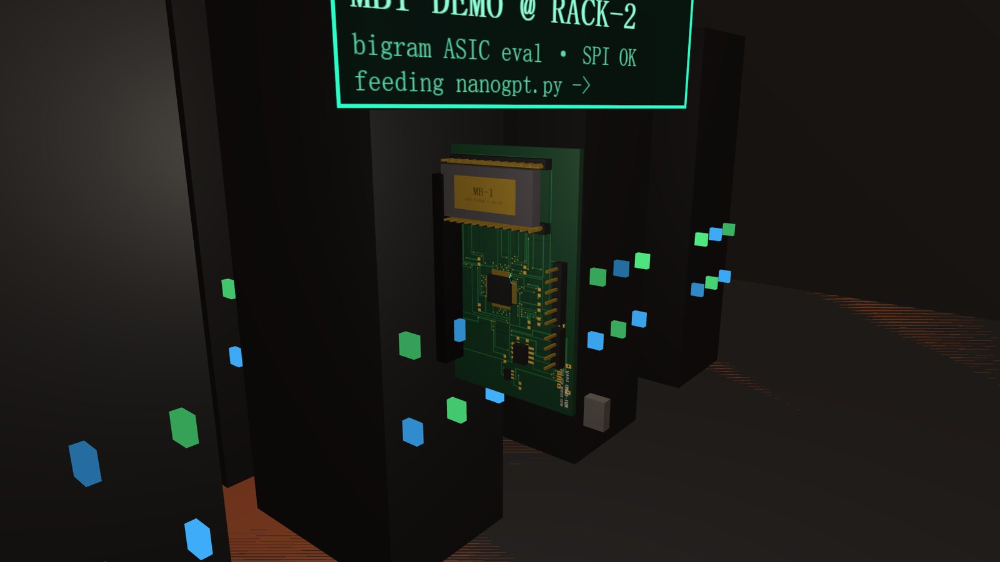
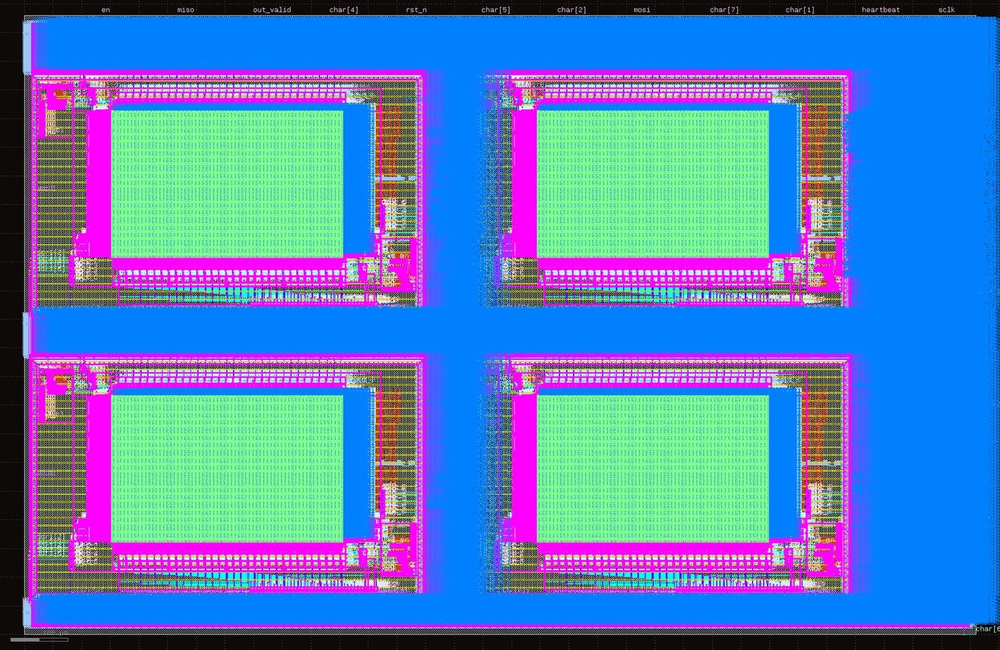
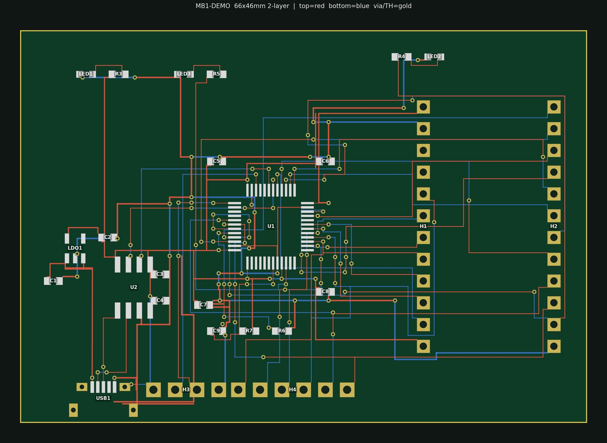
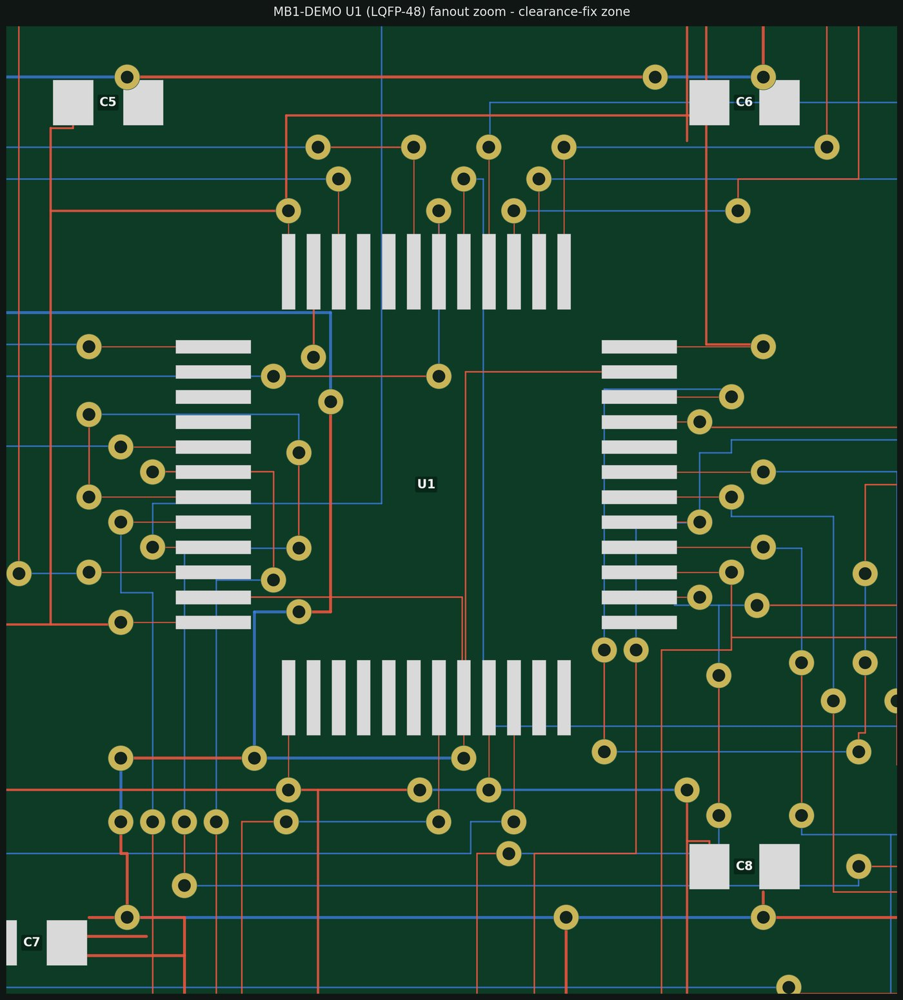
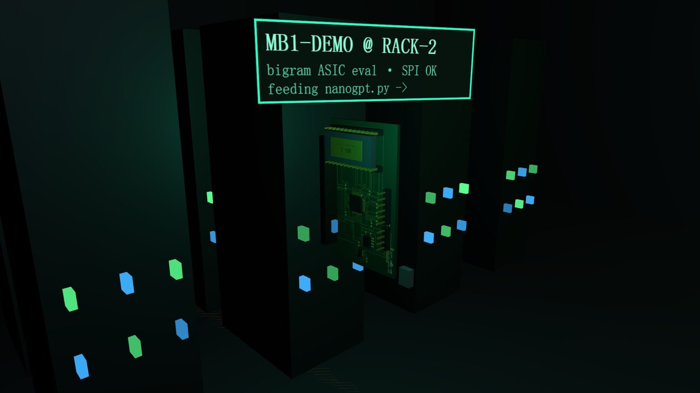

The compute center is where the whole city closes its loop. A character-level bigram language model runs live on the big screen — and the same algorithm exists as a real chip. MB-1 was taken from Verilog to a sky130 GDS with clean routing, and a fabbed eval board now sits as a blade in the rack. Software twin on the screen, silicon body in the machine that computes it.
A datacenter hall whose hero screen runs an AI — and the AI has a body one rack over.
The big screen types Mars text character by character, driven by a bigram model — the starting model from the nanoGPT tutorial, running live in the browser. That is the software twin. The closed loop the whole city is built around ends here: real Mars → HiRISE digital twin → a compute center in the city → running real AI code → generating text about Mars.
The last link is MB-1: that exact bigram algorithm, turned into a real digital ASIC. An MB-1 evaluation board is slotted as a blade into rack 2, a teal data cable running from it toward the screen. The PCB copper you see is drawn from the board's actual layout — 467 routed segments — and the gold-lidded ceramic sample in the DIP-24 socket is engraved MB-1 · sky130.

Training stays off-chip; on-chip inference collapses to “one 16-bit random number × a run of compares.”
The design insight that makes MB-1 buildable: keep the training off the chip. Count the
bigram transitions offline, turn each row into a cumulative distribution (CDF), normalize to 16-bit full
scale, and write it into on-chip SRAM. Sampling then degenerates into inverse-CDF: draw a 16-bit random
number and walk the row comparing until CDF[i] ≥ r. No multiply, no divide, no float —
just comparators, a counter, and a 32-bit LFSR. That is the standard quantized-inference recipe, in silicon.
It was carried through four independent back-ends, each verified before moving on: RTL → FPGA → sky130 GDS → PCB. The 64-Kbit CDF table is a compiled SRAM macro (four OpenRAM blocks) — never synthesized to flip-flops — so on the die it dominates the area exactly as the design brief predicted.



Every headline number, and which run produced it. Nothing on this page is a guess.
| Claim | Value | Produced by |
|---|---|---|
| Bit-exact across 4 tools | Python ↔ iverilog ↔ xsim ↔ synth | tools/mb1_model.py + tb/tb_mb1.sv |
| Two simulators tick-identical | $finish 1,134,185 ns | sim/run.ps1 + sim/run_xsim.ps1 |
| FPGA OOC synth, latches | 0 · 267 LUT / 292 FF | syn/synth_ooc.tcl (Artix-7 -1) |
| FPGA Fmax | 173 MHz | syn/synth_ooc.tcl (OOC estimate) |
| Arty bitstream, timing | MET · WNS +3.29 ns @100 MHz | syn/impl_arty.tcl |
| sky130 logic area | 0.033 mm² · ~2100 cells | asic/synth_sky130.ys (Yosys) |
| SRAM macro equivalence | 11,069 reads · 0 mismatch | tb/tb_cdf_sram_equiv.sv |
| Full die, routing DRC | 1.79 mm² · 0 violations | asic/pnr/mb1_pnr.tcl (OpenROAD) |
| Hold closure | +0.14 ns MET | OpenROAD repair_timing (groute RC) |
| Final GDS | 26.3 MB | asic/pnr/merge_gds.ps1 (klayout) |
| PCB net truth-table | 129 pins · 0 mismatch | pcb/verify_sch.py |
| Board routed | 0-fail A* → Gerber | pcb/route_board.py |
The honest part. Two RTL bugs, a synthesis trap, six place-and-route rounds, thirteen routing rounds.
With cdf[i] ≥ r and r ∈ [0, 0xFFFF], r=0 could select a
zero-probability symbol. Not an RTL-vs-model mismatch — a semantic defect both shared — caught by an
invariant assertion (“a zero-prob symbol must never appear”), not by cross-check. Fix: clamp r to
[1, 0xFFFF], one comparator and a mux, RTL and model together.
When READY was held high, valid<=1 then valid<=0 in the same block
(last assignment wins) gave a zero-cycle pulse — the consumer never saw a valid beat. Only the
constant-ready path, outside the back-pressure test, exposed it. Fix: registered-valid handshake,
plus a clean flush to IDLE when run drops so stale data never leaks between runs.
The behavioral reg mem[] mapped to a phantom 2.33 mm² of DFFs until it was read as a
compiled macro (read_verilog -lib) instead. Real logic is 0.033 mm²; the SRAM is a hard macro.
The failure point moved monotonically inward every round: old build has no place_macro
(place via odb) → PDN row slivers under macros (flush them to the edge) → pin-geography floorplan
(read the LEF first) → tie cells for constant nets → hold repair on global-route parasitics → antenna
repair wedged between global and detailed route. Result: routing DRC 0.
Thirteen routing rounds. A 16-pin USB-C fine row jammed the 5-mil grid router until it was swapped for a Micro-USB — an architectural fix beats a patch-on-a-patch. 57 clearance violations remain, all located with fixes listed; a ~1-hour hand-finish plus a fab DFM check are the honest boundary before ordering.
Walk into the compute center and find the chip that computes the screen.
C for the tech city, walk to the compute center, and look at
rack 2 — the green blade is the MB-1 eval board. Inspect it (V) for the
mb1 knowledge card.MARS COMPUTE CENTER // nanogpt.py, and its boot
log now probes rack2/mb1-eval before sampling.